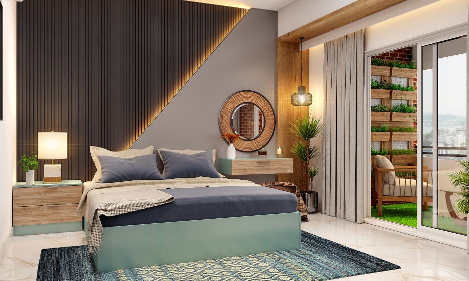
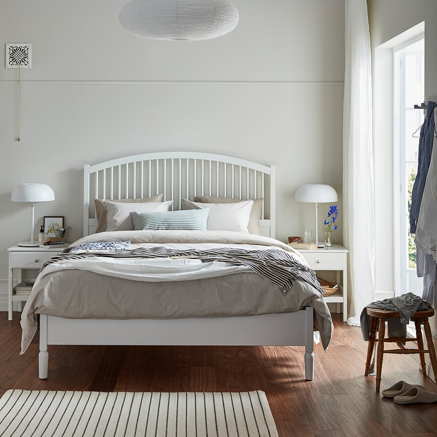
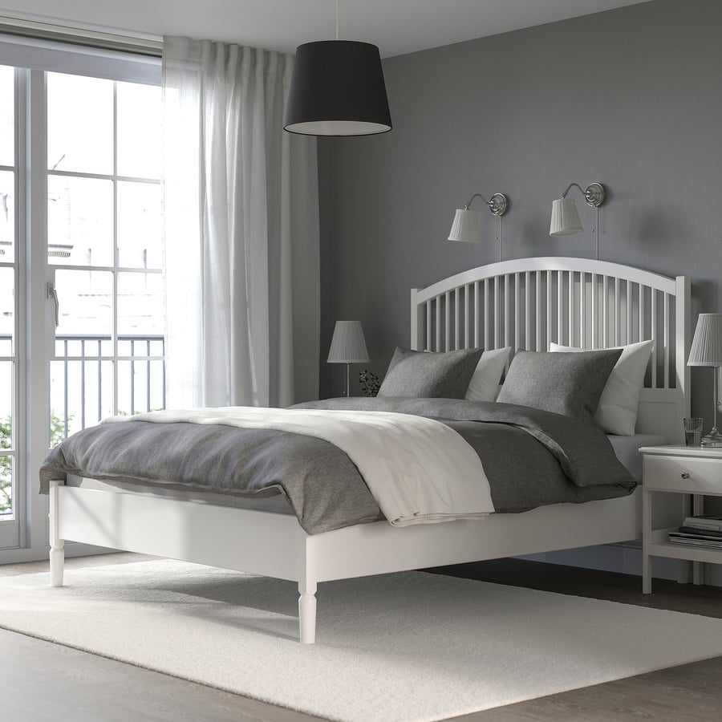
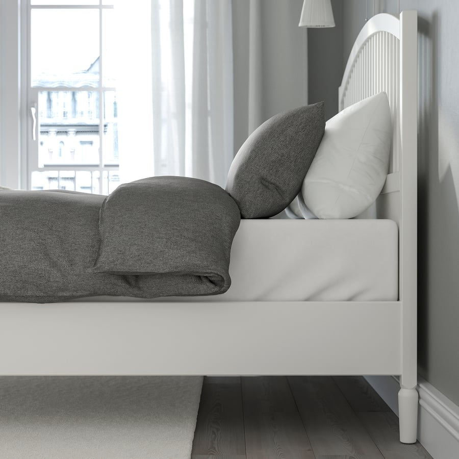
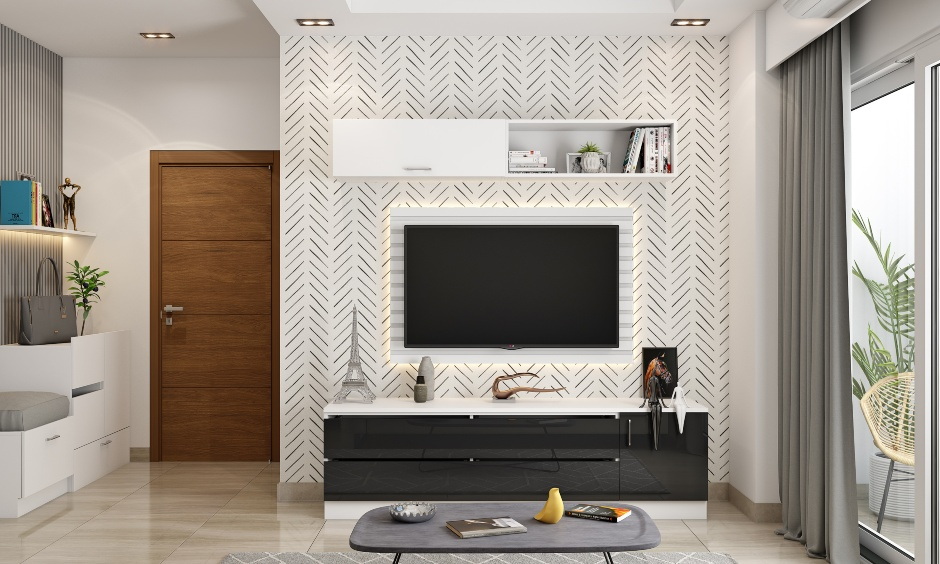
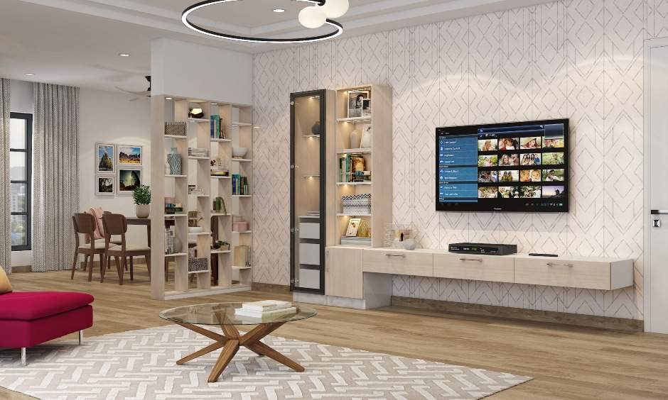
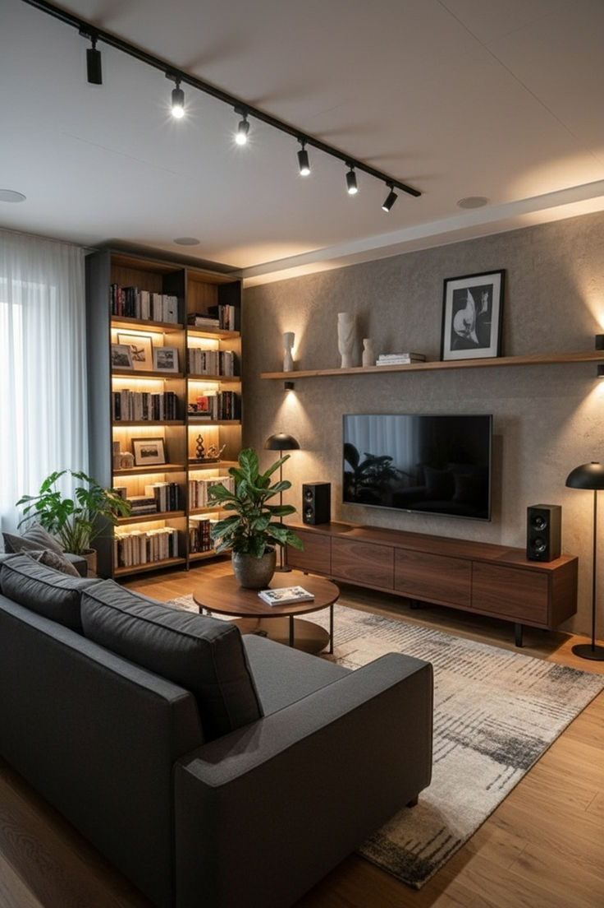
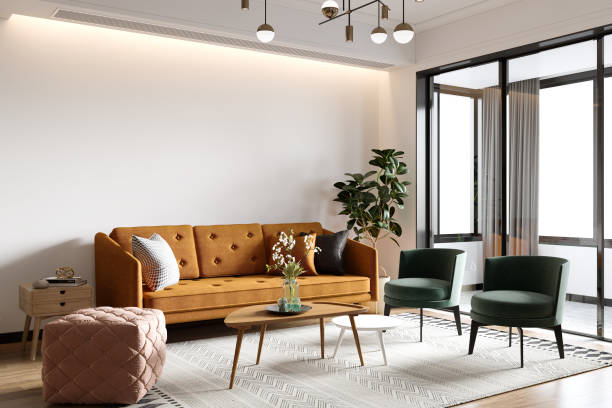

At RS Ranjeet Sharma, we execute beds, TV units, and sofa frameworks with a focus on strength, comfort, and long-term usability. All furniture is manufactured on site using accurate measurements to ensure perfect fitting within the space. Bed structures are built with strong internal frames to support daily use. TV units are planned for cable management, ventilation, and clean alignment. Sofa frameworks are fabricated to provide proper support and comfort. High-quality boards, plywood, and hardware are selected based on usage requirements. Finishing quality and edge detailing are carefully maintained. All installations are carried out under direct site supervision. Our work prioritizes durability and function over temporary appearance.

Precision-built residential furniture executed on site with clean finishing and reliable structure.



This bed was manufactured on site with a strong internal framework and integrated storage. Material selection focused on load-bearing strength and long-term durability.
Storage access, mattress support, and finishing accuracy were carefully executed for daily comfort.
Custom furniture ensures perfect fitting according to room dimensions. Structural strength can be controlled based on usage. Storage can be planned efficiently without wasting space. TV units can be designed with proper ventilation and wiring access. Sofa frameworks provide better comfort and support. Materials are selected as per durability needs. Repairs or modifications are easier in future. Finishing quality remains consistent. Custom execution delivers long-term value and reliability.




This project involved fabrication of a custom TV unit and sofa framework designed for the living space. The TV unit was planned to accommodate wiring, display units, and ventilation.
Sofa structure was built for proper seating comfort and long-term usage stability. All units were manufactured and installed on site with precise alignment.